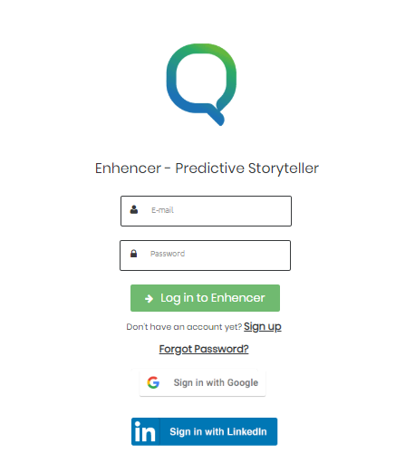

Login Screen
If you are connecting Enhencer first time or your saved login credentials are reset for any
reason, you will be directed to the login page.

hrough your browser. The suggested browser to be used to access
Enhencer is Google Chrome.
Depending on the hosting of your system, you can access the system using the URL.
-
Enter your E-Mail (used to register Enhencer) and Password and click “Login to Enhencer” button.
-
If you have forgotten your passport click “Forgot Password?”>link or consult your Enhencer Admin.
- If you do not have an account, you can click “Sign up” link or consult your Enhencer Admin. In some
local installations, Sign up may be disabled.
- In the Enhencer In Cloud application, you can also sign in to Enhencer using your LinkedIn account.